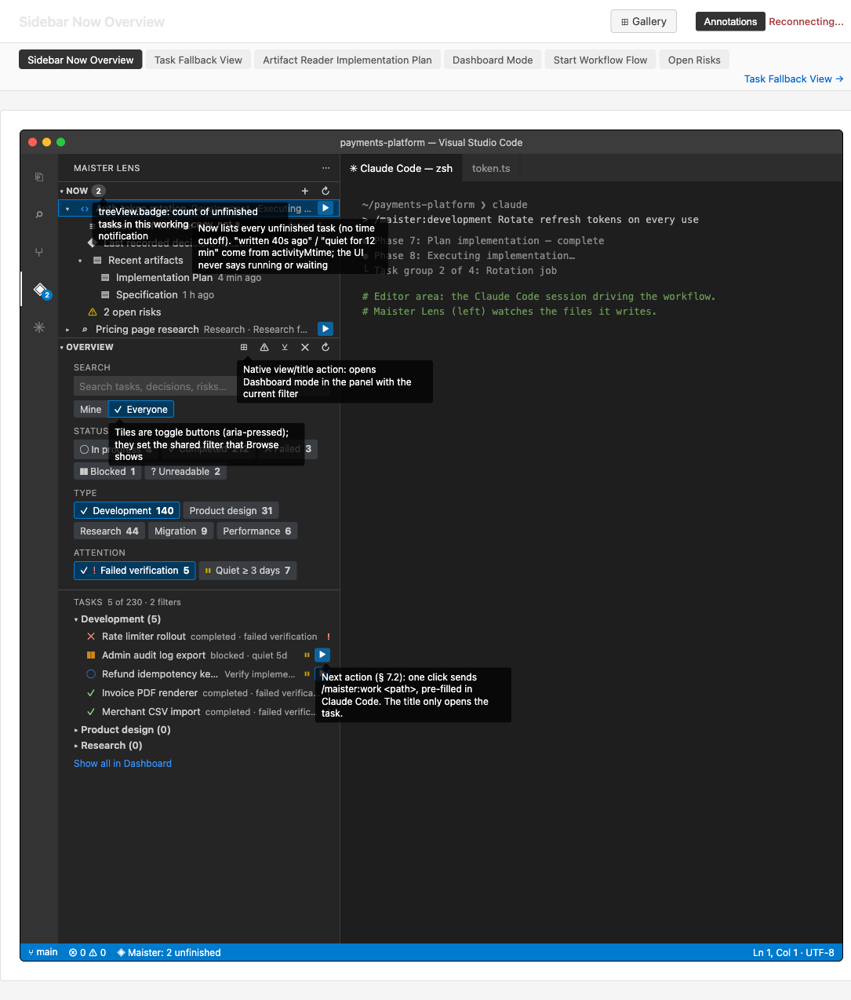
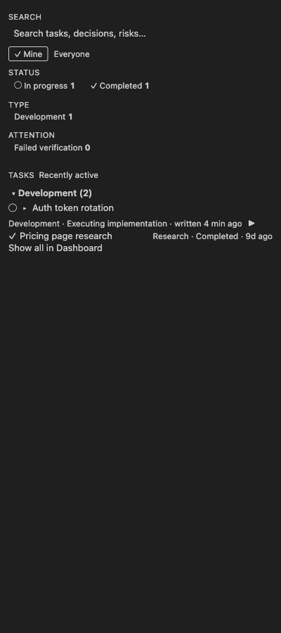
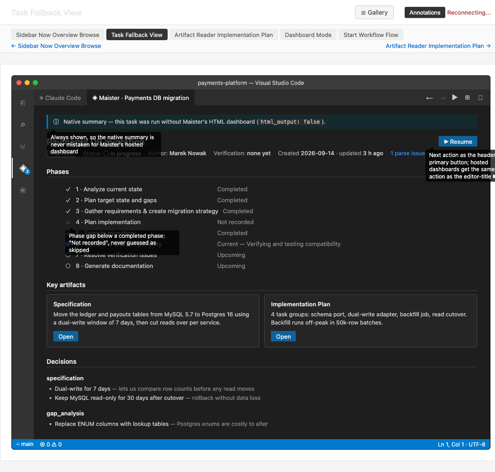
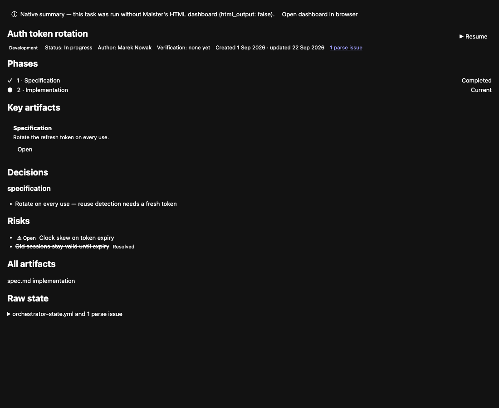
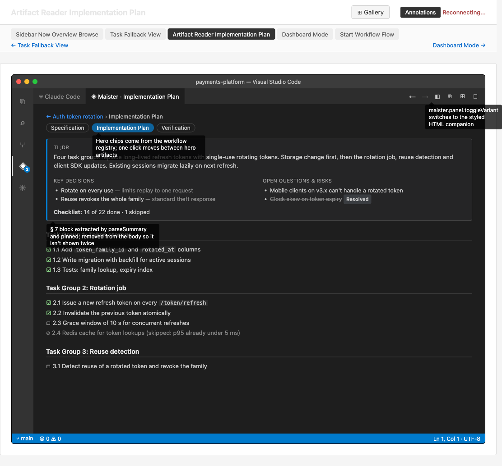
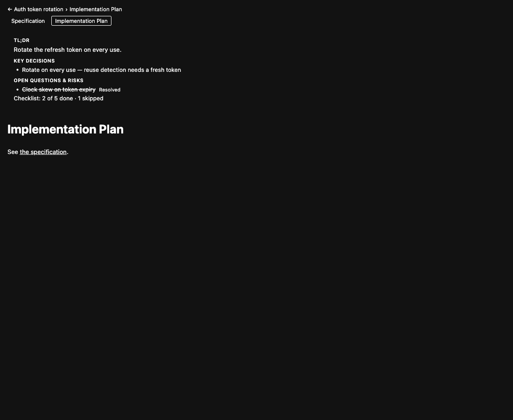
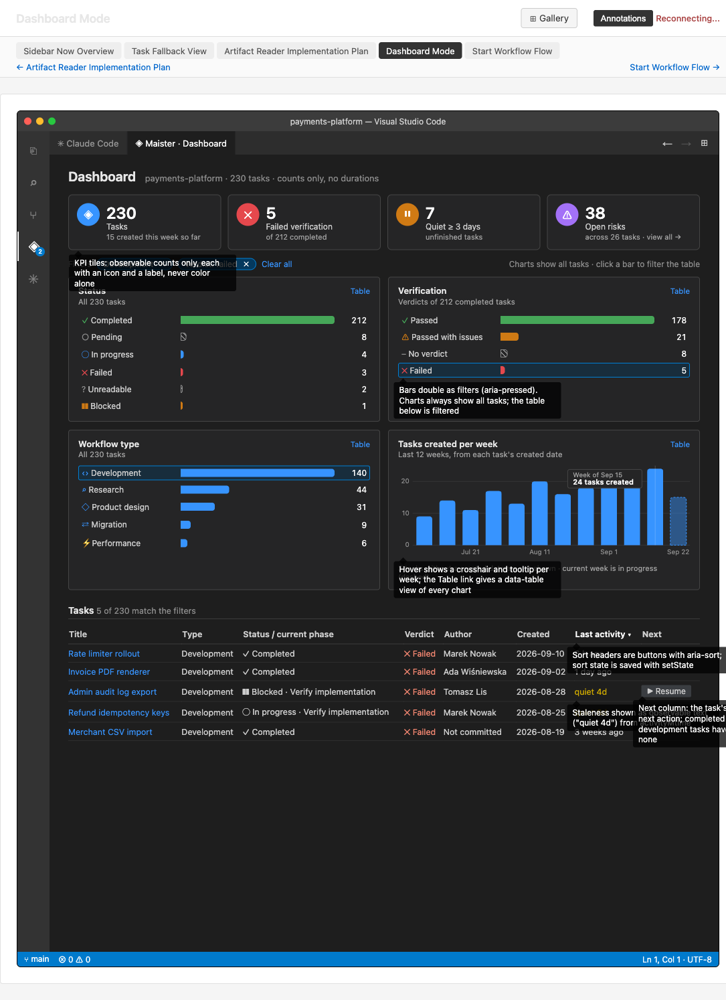
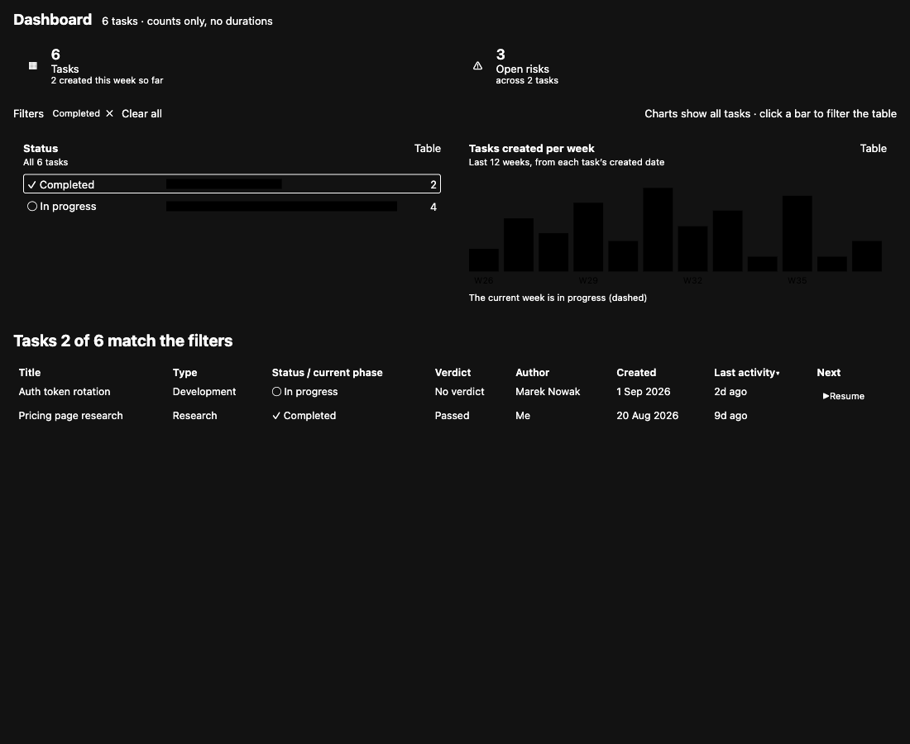
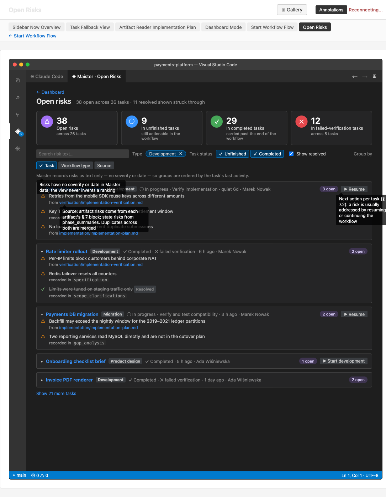
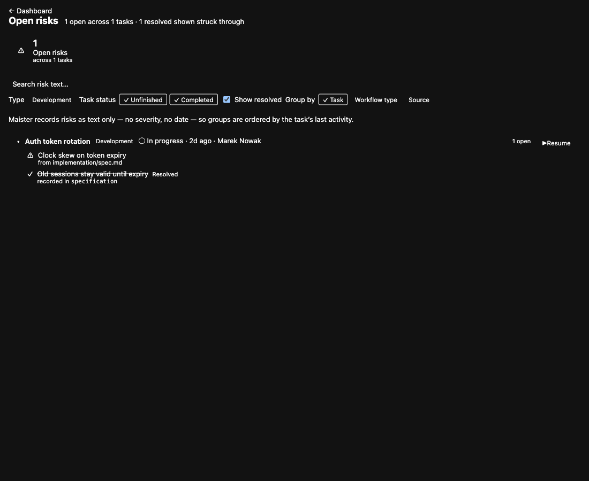

Per-Screen Comparison
✓ Match — screen:sidebar-now-overview (Overview half only)
Scope: only the Overview half is comparable. The Now half is a native VS Code TreeView (src/views/nowTree.ts) — no browser-loadable DOM; asserted instead by test/integration/nowTree.test.ts. The mockup's ◈ Maister: 2 unfinished status-bar element is a known mockup defect (A12 drops the status bar).
- Layout: single-column sidebar; Search → Mine/Everyone → Status → Type → Attention → Tasks → grouped list → "Show all in Dashboard" — matches exactly.
- Field order: facet tiles
glyph · label · count; group headers{group} ({count}); rowsglyph · title · description · ▶— matches. - Copy:
Tasks 5 of 230 · 2 filtersreproduces the mockup verbatim (verified by posting a filtered payload). Stale "Browse" wording correctly absent. - Primary actions: per-row
▶only where the task has a next action; completed research row renders none — matches the mockup's annotation. - States covered: unfiltered, filtered, row markers, 250 px and 400 px.
- Intentional deviations: hero expander
▸between glyph and title (§ 4.2 requires an expander the mockup does not draw); status word visually hidden on in-progress rows where the mockup shows the phase activeForm — the word stays in the accessible name.


⚠ Minor Deviation — screen:task-fallback-view
- Layout: banner → title + next action → meta line → Phases → Key artifacts → Decisions → Risks → All artifacts → Raw state. Matches for every section the mockup draws.
- Deviation 1 (minor, and a defect): the mockup's meta line reads
Status: ◯ In progress; the implementation rendersStatus: In progresswith no glyph, althoughFallbackPayload.statusGlyphis populated by the host and unread by the bundle. Dashboard and Risks both draw the same value. Filed as MIN-1 (with MIN-2). - Deviation 2 (minor, and correct): the implementation adds All artifacts between Risks and Raw state. § 5.4 specifies six sections; the mockup draws five. Group 12's adjudication #2 confirms the six-section reading — spec wins over mockup.
- Field order: type badge → Status → Author → Verification → Created · updated → parse-issue anchor — exact, including the anchor into Raw state.
- Copy: banner text,
Verification: none yet,Created … · updated …,orchestrator-state.yml and 1 parse issueall match. - Control anatomy:
▶ Resumein the header beside the title, as drawn; the Risks<h2>is additionally a button into Risks mode (§ 5.7 entry point, step 8.7) — an addition the mockup does not show. - States covered: next action + parse issue; phase rows Completed and Current; risks open-first with a resolved row struck through and labelled.


✓ Match — screen:artifact-reader
- Layout: skip link → breadcrumb → hero chips → pinned summary card → document body — exact order match.
- Field order in the card: TL;DR → Key decisions → Open questions & risks → checklist line as the card's last child — matches, which is what settled group 7's flagged ambiguity.
- Copy:
Skip to document,← {task} › {artifact}, the three card headings andChecklist: 2 of 5 done · 1 skippedall match (the mockup's caps are a CSS transform, not different copy). - Control anatomy: hero chips are buttons with
aria-pressedon the current artifact — matches the mockup's annotation. - States covered: summary present; summary
null(card omitted,main#docstill rendered — asserted by the DOM suite); resolved risk struck through with a visible label.


⚠ Minor Deviation — screen:dashboard-mode
- Layout: heading + scope → KPI row → filter bar → chart grid → task table — matches.
- KPI order and anatomy: Tasks (◈ blue) → Failed verification (✕ red) → Quiet ≥ {days} days (⏸ orange) → Open risks (⚠ purple), each a disc glyph + value + label + one-line context. Verified against
src/panel/panel.ts:730-767; identical to the mockup and the § 5.5 table. - Chart grid: Status / Verification / Workflow type / Tasks created per week, each with a Table control — matches. The 12-week column chart fits its card (
viewBox 0 0 480 130); the squashed two-week rendering in the capture below is a fixture artifact, not the shipped geometry. - Table columns: Title · Type · Status / current phase · Verdict · Author · Created · Last activity · Next — exact match, in order, with the sort indicator on Last activity as drawn.
- Copy:
Tasks N of M match the filters,Charts show all tasks · click a bar to filter the tableandClear allall match verbatim. - Deviation 1 (minor): the mockup prefixes the working-copy name in the scope line; the implementation renders
{total} tasks · counts only, no durations. The feature spec does not specify the prefix. Filed as COS-3. - Deviation 2 (minor): the mockup appends
· view all →to the Open-risks KPI context; the implementation makes the whole tile a button namedShow all {k} open risks in the Risks view. Same affordance, one activation target, a better accessible name. - Intentional deviations: the Table control is a
<button>rather than the mockup's no-op<a href="#">; rows expose a title button instead of a whole-row click handler, which is what keeps AC17/AC14's "exactly one next-action control, distinct from the title control" true. - States covered: filtered (chip + Clear all), chart view and data-table view of the same card, rows with and without a next action.


✓ Match — screen:open-risks
- Layout: breadcrumb
← Dashboard→ heading + count line → KPI tiles → filter bar → order note → group cards — matches. - KPI order: Open risks · In unfinished tasks · In completed tasks · In failed-verification tasks, with the mockup's context lines preserved verbatim in
src/strings.ts. - Filter bar: risk-text search → Type → Task status → Show resolved → Group by. The search box is § 5.7 filter-bar item 1; the mockup simply omits it. Everything else matches in order.
- Group card field order: disclosure → title → type badge → status · activity · author →
{n} open→ next action — exact. - Risk row anatomy: ⚠ glyph → risk text →
from {artifact path}(a button into the reader) orrecorded in {key}— exact. - States covered: default (Show resolved off — resolved rows and the resolved clause both absent, per the ruled mockup defect); Show resolved on (heading gains
· 1 resolved shown struck through; the resolved row appears struck through with a visibleResolvedlabel). - Copy nits: COS-2 (no singular form: "1 open across 1 tasks") and COS-4 ("no severity, no date" vs the mockup's "no severity or date"). Neither changes meaning.


— Not comparable — screen:start-workflow-flow
A native VS Code QuickPick sequence (src/launch/launch.ts), not a webview. No DOM, no bundle, no URL — nothing a browser can render or compare. implementation/visual-coverage.md binds it to prompt order and copy rather than markup, which is the only workable binding.
Verified elsewhere: group 9's unit tests assert the three steps, the picker's verbatim one-sentence details, the verbatim step-2 prompt and the 5 s status line. The one recorded addition is a placeholder carrying the 1–2,000-character constraint, which the mockup renders as a step header VS Code has no equivalent for.
— Not comparable — component:hosted-dashboard
No mockup by design — this is Maister's own dashboard.html, hosted unmodified. Comparing it to a mockup would be meaningless: the contract is verbatim hosting, not a layout the team designed.
Verified elsewhere: test/unit/hostDashboard.test.ts asserts byte-level equality with the source apart from the five declared changes (CSP meta after <meta charset>, <base href>, nonced shim script, nonce on the one inline script, removal of the file's own CSP meta), plus a script count. test/dom/surfaces.spec.ts and test/dom/security.spec.ts load the real committed dashboard through the production hostDashboardHtml() and prove the shim, the nonce and the policy behave.
Cross-Reference with implementation/visual-coverage.md
| INDEX ID | Coverage matrix claim | This pass |
|---|---|---|
screen:sidebar-now-overview | Group 5 implements; 10 structural; 11 manual | ✓ confirmed for the Overview half; Now half out of reach by construction |
screen:task-fallback-view | Group 7 implements; 10 structural; 11 manual | ⚠ confirmed with one defect (MIN-1) the structural suite does not assert |
screen:artifact-reader | Group 7 implements; 10 structural; 11 manual | ✓ confirmed |
screen:dashboard-mode | Group 8 implements; 10 structural; 11 manual | ⚠ confirmed with two minor copy/affordance deviations |
screen:open-risks | Group 8 implements; 10 structural; 11 manual | ✓ confirmed, including the ruled mockup-defect behaviour |
screen:start-workflow-flow | Group 9 implements; 11 manual | — not comparable; the matrix's "flow reference" binding is the right one |
component:hosted-dashboard | Group 6 verbatim-hosting contract | — not comparable; hosting contract verified by test, not by eye |